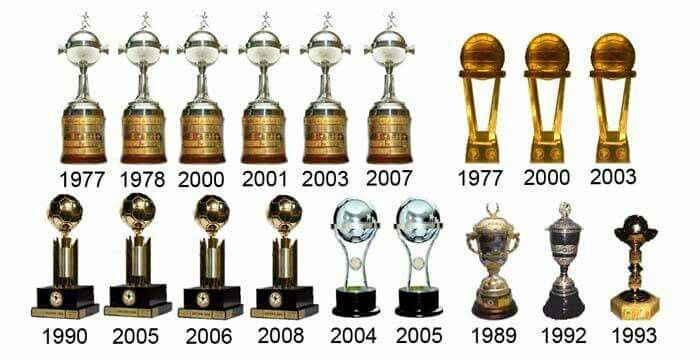

<h5><em>CAMPEONATOS INTERNACIONALES </em></h5>
<ul>(18 títulos)
    3 Copas Intercontinentales; 6 Libertadores; 2 Copas Sudamericanas; 4 Recopas Sudamericanas; 1 Supercopa Sudamericana, 1 Copa Master de Supercopa; 1 Copa de Oro Nicolás Leoz</ul>
    <li>